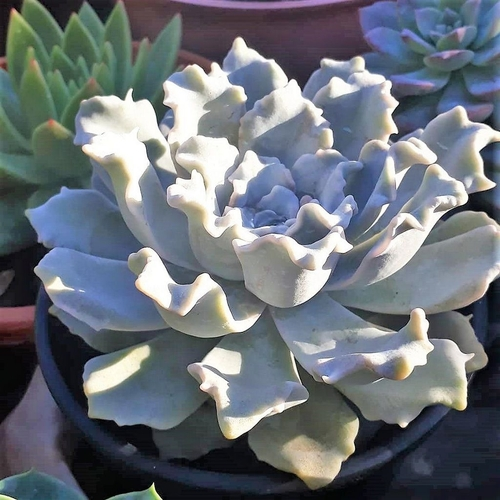

Las Suculentas en general y los Cactus en particular precisan un lugar con mucha luz,
aunque el sol directo todo el día podría provocar quemaduras en determinadas especies más delicadas.
Lo mejor es una posición donde disfruten de sol una parte del día, al menos unas 5 ó 6 horas de sol, de
mañana o de tarde.
Los Cactus grandes toleran más sol que los pequeños, pero incluso al alcanzar los 4-5 años conviene que
parte del día estén bajo una leve sombra.
Las macetas de plástico oscuro se pueden sobrecalentar con el sol y quemar las raíces del Cactus. Lo
mejor es tener macetas de colores blancos o pastel y en caso de no tener otra opción, recubre la maceta por
fuera con papel u otro material blanco grueso.

Temperatura
Dependerá de las especies, pero en general, si la temperatura baja de +5o C muchas Suculentas, sobre
todo las que provienen de zonas tropicales, pueden morir.
Cuando el termómetro baje de 10o-15o C es muy importante conservar el substrato de las macetas totalmente
seco.
Por tanto, si tienes una Suculenta en macetas en el jardín, es aconsejable disponer de un sitio con techo,
donde no se mojen con la lluvia, porque no aguantan la conjunción de frío y suelo húmedo.
Además el techo resguarda del frío, pero en climas con heladas fuertes no será suficiente protección y
hay que meter dentro de casa o en un invernadero cerrado.
Las plantas pueden estar fuera de abril a septiembre, cuando ya no haya riesgo de heladas.
